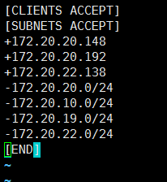

1 说明
方案：采用minimal_pf.so模块和包过滤
此方法同样适用于基本认证。
参考资料：http://backreference.org/2010/06/18/openvpns-built-in-packet-filter/
http://732233048.blog.51cto.com/9323668/1713088
2 安装openvpn及设置LDAP认证
详细步骤参考本站 openvpn部署之部署基于ad域认证访问内网
3 控制访问权限
3.1 创建及编辑minimal_pf.c模块
1 | [root@openvpn ~]# cd /etc/openvpn/ |
键入以下内容（内容固定）
1 | /* minimal_pf.c |
3.2 构建插件
下载并解压OpenVPN源码压缩包（严格来说，只需要openvpn-plugin.h）
openvpn源码安装包：openvpn-2.3.11.tar.gz ，解压文件，复制include目录到/etc/openvpn`
并使用以下命令构建插件：
1 | INCLUDE="-I/etc/openvpn" # CHANGE THIS!!!! |
3.3 创建包过滤文件
1 | mkdir /etc/openvpn/ccd |
创建以用户名.pf命名的文件，输入以下内容。
1 | vi client1.pf #客户client1，只对10.10.1.0网段有权限 |
3.3.1 包过滤文件补充
包过滤文件格式：
1 | [CLIENTS DROP|ACCEPT] |
注意事项：
创建过滤文件时，允许访问的地址写到上面，禁止访问的地址写在后面。如果先禁止访问网段，在允许访问网段IP地址，依然受限。
例如：

3.4 创建客户端连接脚本
1 | cd /etc/openvpn |
1 |
|
3.5 修改openvpn配置文件
1 | vim /etc/openvpn/server.conf |
1 | ca /etc/openvpn/easy-rsa/keys/ca.crt |
3.6 重启openvpn服务器
1 | /etc/init.d/openvpn restart |
配置完成。